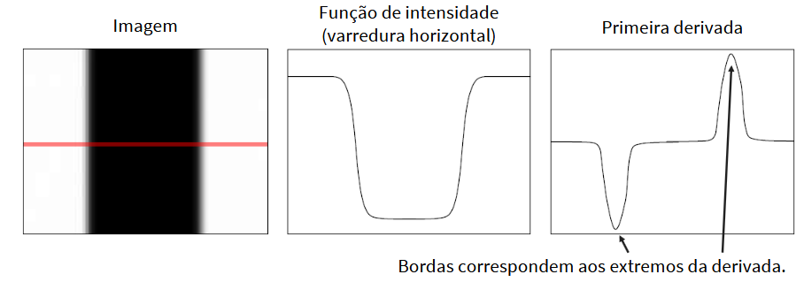
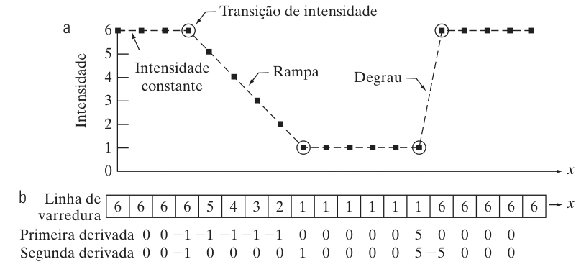
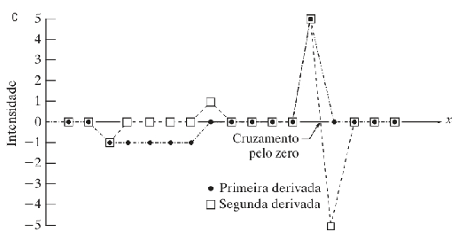
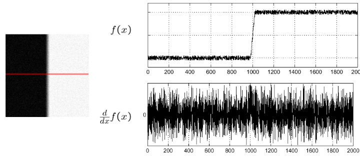
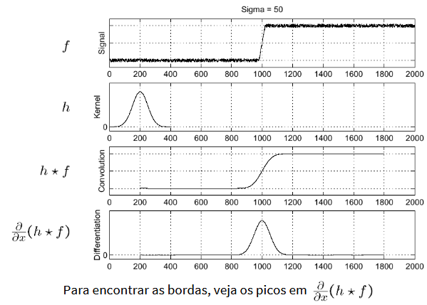
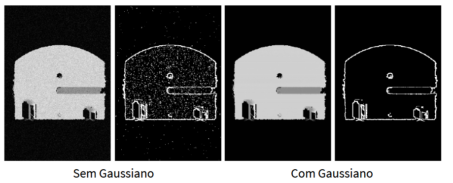

Resumo extraído do livro Processamento digital de imagens. 3. ed. E-book e material da disciplina para fins de estudo sobre os tópicos das últimas aulas.
FILTROS ESPACIAIS DE AGUÇAMENTO
Aguçamento: salientar transições de intensidade para o aumento da nitidez de uma imagem.
A força da resposta de um operador derivativo é proporcional ao nível de descontinuidade da intensidade da imagem no ponto no qual o operador é aplicado. Dessa forma, a diferenciação de uma imagem realça as bordas e outras descontinuidades (como o ruído) e atenua as áreas com intensidades de variação mais suave.

As derivadas de uma função digital são definidas em termos de diferenças.
Para a primeira derivada:
Em primeiro lugar, encontramos uma área de intensidade constante e as duas derivadas são zero, de modo que a condição (1) é satisfeita em ambas.
Em seguinda, encontramos uma rampa de intensidade seguida de um degrau e notamos que as derivadas de primeira e segunda ordem são diferentes de zero no início da rampa e do degrau; assim, a propriedade (2) é satisfeita para as duas derivadas.
Por fim, verificamos que a propriedade (3) também é satisfeita para as duas derivadas porque a primeira derivada é diferente de zero, e a segunda é zero ao longo da rampa.

Observe que o sinal da segunda derivada muda no início e no final de um degrau ou de uma rampa. Com efeito, em uma transição de degrau, uma linha ligando esses dois valores cruza o eixo horizontal na metade do caminho entre os dois extremos. Essa propriedade de cruzamente pelo zero é bastante útil para localizar bordas.

As bordas nas imagens digitais, muitas vezes, são transições parecidas com rampas em termos de intensidade, caso no qual a primeira derivada da imagem resultaria em bordas espessas pelo fato de a derivada ser diferente de zero ao longo da rampa. Por outro lado, a segunda derivada produziria uma dupla borda, com espessura de um pixel, separada por zeros. Com isso, concluímos que a segunda derivada realça muito mais os detalhes finos do que a primeira derivada e é mais fácil de implementar do que a primeira derivada.
Implementação de derivadas bidimensionais de segunda ordem e sua utilização para o aguçamento de imagens. A metodologia consiste basicamente em definir uma fórmula discreta da derivada de segunda ordem e construir uma máscara de filtragem com base nesse formulação. Estamos interessados em filtros isotrópicos, cuja resposta independe da direção das descontinuidades da imagem à qual o filtro é aplicado. Em outras palavras, os filtros isotrópicos são invariantes em rotação, no sentido de que rotacionar a imagem e depois aplicar o filtro fornece o mesmo resultado que aplicar o filtro à imagem primeiro e depois rotacionar o resultado.
O operador derivativo isotrópico mais simples é o laplaciano. Como o laplaciano é um operador diferencial, sua utilização realça as descontinuidades de intensidade em uma imagem e atenua as regiões com níveis de intensidade de variação mais suave. Isso tenderá a produzir imagens nas quais as linhas de borda e outras descontinuidades aparecerão em tons de cinza sobrepostos a um fundo escuro e uniforme. As características do fundo podem ser "recuperadas" enquanto se preserva o efeito do aguçamento do laplaciano simplesmente adicionando a imagem laplaciana à original.
Uma variação muito pequena entre pixels pode ser interpretada pelo operador derivativo como uma mudança abrupta. Essas pequenas oscilações podem gerar respostas fortes na derivada. Por isso, a solução é suavizar primeiro. O isotrópico é importante para o laplaciano, porque ele responde à magnitude da mudança, independentemente da orientação
As derivadas de primeira ordem em processamento de imagens são implementadas utilizando a magnitude do gradiente.O gradiente aponta na direção de mudança mais rápida da intensidade.
Magnitude do gradiente (comprimento do vetor):
Derivada amplifica ruído.
Filtros derivativos respondem intensamente aos pixels que diferem de seus vizinhos.

Solução: suavizar primeiro

Suavização -> Derivada -> Aguçamento
O filtro Gaussiano é um filtro de suavização, que substitui um pixel por uma combinação ponderada dos pixels vizinhos, dando maior peso aos pixels mais próximos.
O efeito é "espalhar" cada valor um pouco para seus vizinhos.
Isso reduz as variações muito pequenas causadas pelo ruído.
Pela propriedade da convolução, podemos trocar a ordem da derivação e da convolução, construir diretamente um filtro que seja derivada do Gaussiano e convoluí-lo com a imagem.
Então a derivada do Gaussiano faz, conceitualmente: suavização + detecção de mudança em uma única operação de filtragem.
